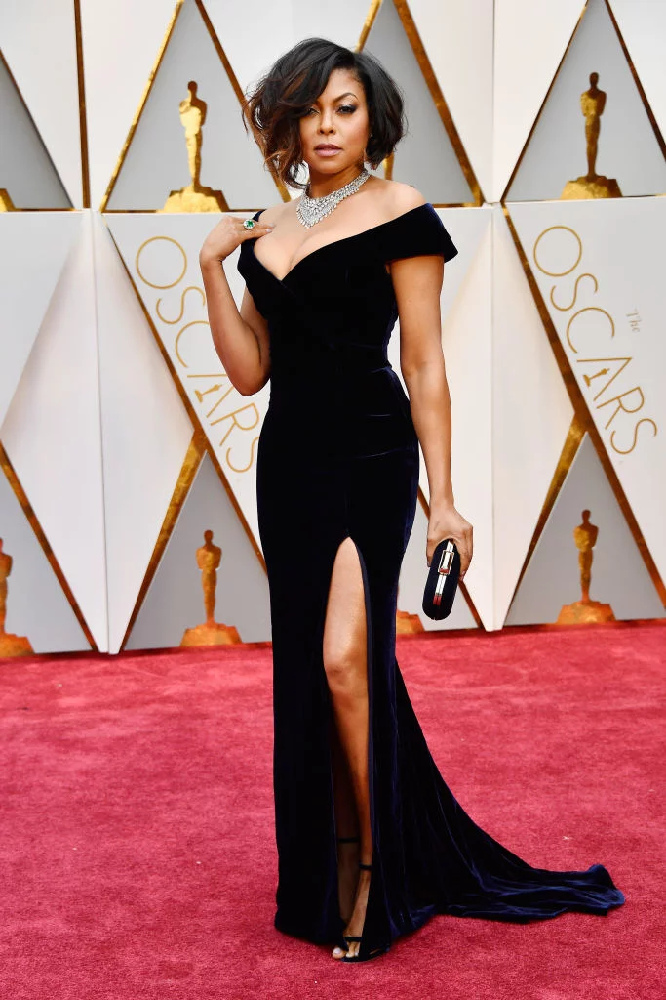

Jada-Nicole Witherspoon
My name is Jada-Nicole Dumas Witherspoon. I am a 15 year old sophomore at Mastery Charter Shoemaker Campus in West Philadelphia. I aspire to be a chef with my own restaurant(s). Ever since I was a little girl I’ve been interested in culinary arts. However it wasn’t until the end of eighth grade that I knew that I really wanted to pursue a career in that specific specialty. I understand that the path to getting there will not be an easy one. Which is why I’m so grateful to be accepted into SMASH. Before coming here I had no real plan. All there was, was a layout. An overall view of how I expected things to go. This program gave me a slap of reality. I am so grateful for even though it comes with it’s ups and downs. So now whenever people ask what I want to be I correct them and tell them that I will a chef who opened and established her own restaurant and is working to make herself a household name!